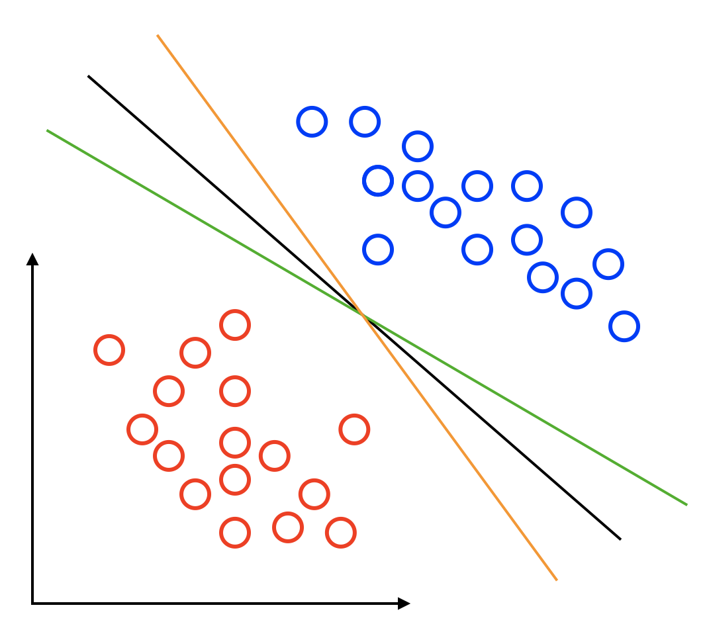
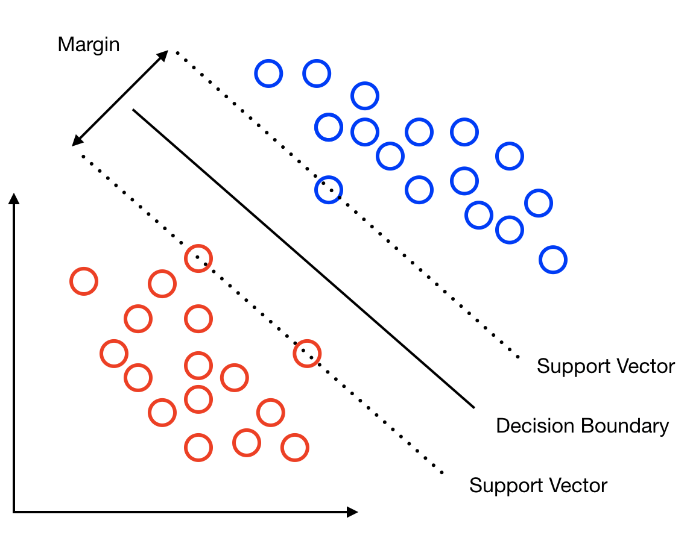
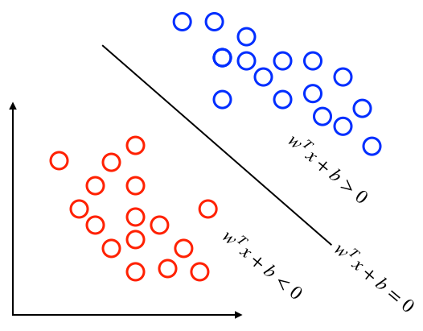
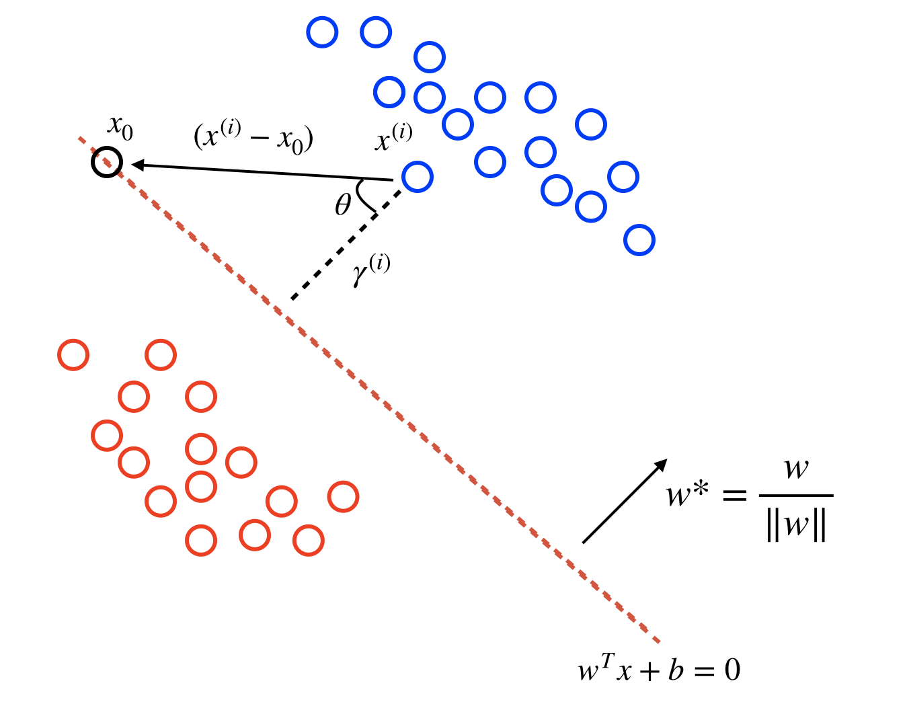

Support Vector Machines (Part 1)
Support Vector Machines (SVMs) are a versatile classification algorithm that should be a staple in every data scientists toolbox. In this first of a series of posts, my goal is to describe the intuition behind SVMs what makes them such a powerful technique for classification.
Suppose we want to classify the red dots from the blue in the figure below. Plotted on the axes are an orange, black and green hyperplane. All three perfectly separate the red and blue classes. So which one is the best choice to split our data?

The hardest points to classify are those sat closest to the hyperplane. Therefore, a decision boundary that creates a large gap between the classes is preferable because new data points are more likely to be correctly classified. The SVM defines this criterion as finding a decision boundary that is maximally far away from any data point. The distance between the decision boundary and the closest data point determines the margin of the classifier.
The figure below shows the data being separated by the largest margin decision boundary. The maximum margin decision boundary is defined by two parallel hyperplanes, one that goes through the positive data points closest to the decision boundary and one that goes through the negative points closest to the decision boundary. These are known as the support vectors.

Mathematically, we can summarise what we have described so far.
Suppose we are given \(N\) training vectors \(\{(x^{(i)}, y^{(i)}); i=0, \dots, N\}, \text{ where } x ∈ \mathbb{R}^{D}, y ∈ \{−1, 1\}\). We want to learn a set of weights \(w\) and \(b\) such that the linear combination of weights and input data predicts the value of y.
In the two dimensional case, our decision boundary \(w^{T} x + b = 0\) is simply a line with the regions above and below it represented by \(w^{T}x + b > 0\) and \(w^{T}x + b < 0\).

Distance between points and the hyperplane
We know that we want to find the values of \(w\) and \(b\) that provide the widest margin. Therefore, we need a way to measure the distance between a given point and the hyperplane. Let's define \(\gamma^{(i)}\) to be the distance between the \(i^{th}\) training observation \(x^{(i)}\) and our hyperplane.
Consider the decision boundary shown in the figure below. If we define \(x_{0}\) to be a vector on the hyperplane. Then the \(x^{(i)} - x_{0}\) represents a vector from \(x^{(i)}\) to the hyperplane. The dotted black line from \(x^{(i)}\) to the hyperplane represents the vector whose distance is the shortest to the hyperplane. This dotted line forms a right-angled triangle with the hyperplane and we can label the unknown angle at the top of our triangle \(\theta\). The vector \(w^{*}\) represents the unit vector perpendicular to the hyperplane.

Using trigonometry, and setting \(f = x^{(i)} - x_{0}\):
\(\cos{\theta} = \dfrac{\text{adjacent}}{\text{hypothenuse}}\\ \implies \cos{\theta} = \dfrac{\gamma^{(i)}}{\|f\|}\\ \implies \|f\|\cos{\theta} = \gamma^{(i)}\\ \implies \dfrac{\|w^{*}\|}{\|w^{*}\|}\|f\|\cos{\theta} = \gamma^{(i)}\\ \implies fw^{*} = \gamma^{(i)}\\ \implies \dfrac{(x^{(i)} - x_{0})w}{\|w\|} = \gamma^{(i)}\)
and then using \(wx_{0} = -b\), since \(x_{0}\) lies on the hyperplane, we have:
\(\implies \dfrac{wx^{(i)} + b}{\|w\|} = \gamma^{(i)}\)
We will see below how this distance is used in the definitions of the Functional and Geometric margins defined below.
Functional and Geometric Margins
Given a training example \((x^{(i)}, y^{(i)})\), we define the functional margin of \((w, b)\) with respect to a training example as:
\(\hat{\gamma}^{(i)} = y^{(i)}(w^{T} x^{(i)} + b)\)
The functional margin serves as a test function to determine whether a given training point is classified correctly. For a training example to be correctly classified \(\hat{\gamma}^{(i)} \geq 0\).
One problem with the functional margin is that it can be affected by an arbitrary scaling of \(w\) and \(b\). That brings us onto the definition of the geometric margin:
\(\gamma^{(i)} = \hat{\gamma}^{(i)}/\|w\|\)
The geometric margin is telling you not only if a point is properly classified or not, but the magnitude of that distance in term of units of |w|. It is invariant to any scaling of \(w\) or \(b\) which will be important later. The geometric margin should look familiar as the distance between a training point and our hyperplane that we derived in the previous section multiplied by the label \(y^{(i)}\).
Given a training set
\(S = \{(x^{(i)}, y^{(i)}); i=1 \dotsc n\}\)
we define the geometric margin of \((w,b)\) with respect to \(S\) to be the smallest of the geometric margins on the individual training examples:
\(\gamma = \min_{i=1 \dotsc n} \gamma ^ {(i)}\)
The optimal margin classifier
In order to find the widest margin classifier, we want to maximise the geometric margin whilst still correctly classifying all our training examples. This can be formulated as the following optimisation problem:
\(\max_{w, b} \gamma \quad\) s.t. \(\quad \dfrac{y^{(i)}(w^{T} x^{(i)} + b)}{\|w\|}\geq \gamma \text{ for } i=1 \dotsc n\)
It turns out that the above problem is hard to optimise. Therefore, we convert it to any equivalent problem that happends to be easier to solve. For any solution to satisfy the above equation, any positively scaled multiple will also, due to the fact that the geometric margin is invariant to scaling of \(w\).
Therefore, we can scale \(w\) in such a way that \(\|w\| = \dfrac{1}{\gamma}\). Also note that maximising \(\dfrac{1}{\|w\|}\) is the same as minimising \(\|w\|\) which is the same as minimising \(\dfrac{1}{2}\|w\|^{2}\).
Thus, we can reformulate the optimisation problem as:
\(\min_{w, b} \dfrac{1}{2}\|w\|^{2} \quad\) s.t. \(\quad y^{(i)}(w^{T} x^{(i)} + b)\geq 1 \text{ for } i=1 \dotsc n\)
This optimisation problem is known as a quadratic optimisation problem which is easier to solve. The solution to this optimisation problem will be the topic for a future post.